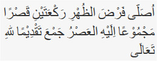
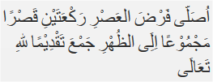

Solat Jama Qosor
Solat Jama Qosor
Berniat menjamak qasar shalat duhur dengan jamak takdim. Jika dilafalkan sebagai berikut:  ”Ushalli fardhadh-dhuhri raka'ataini qashran majmuu'an 'ilaihil 'ashru jam'a taqdhiiman lillaahi-ta'aala” Artinya: “Saya berniat salat duhur dua rakaat digabungkan dengan salat asar dengan jamak takdim, diqasar karena Allah Ta’ala” Berdiri dan niat salat asar, jika dilafalkan sebagai berikut:  ”Ushalli fardhal 'ashri raka'ataini qashran majmuu'an 'iladh-dhuhri jam'a taqdhiiman lillaahi-ta'aala” Artinya: “Saya berniat salat asar dua rakaat digabungkan dengan salat duhur dengan jamak takdim, diqasar karena Allah Ta’ala”
Jama' Qosor Taqdim
Cara Melaksanakan Shalat Jamak Qashar Taqdim, Dhuhur dengan Ashar